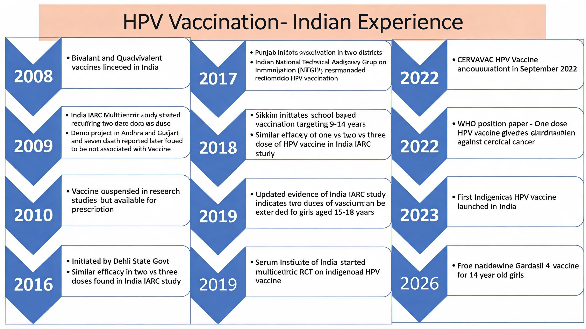

The HPV vaccine has had a long and challenging journey in India. Those of us who have advocated for it over the years have witnessed many ups and downs, but science has stood strong, and so has this vaccine.
As a Gynaecological Oncologist working in women's cancers in government set-ups both in Kolkata and in New Delhi, I strongly support HPV vaccination as one of the most effective tools to prevent HPV-associated infections — with special reference to cervical cancer. While the benefits may not be immediately visible, they will certainly be reflected in the coming decades.
"I warmly welcome the initiative of the Government of India and the Government of West Bengal to vaccinate adolescent girls at 14 years of age through the National Immunization Program. This is a landmark step towards cervical cancer prevention and a healthier future for our daughters."
Three HPV vaccines are currently available in India, and they can be given to both girls and boys. The science behind these vaccines is strong, and the evidence supporting their effectiveness is overwhelming.
The Indian Experience — A Timeline
The path from licensure to a national programme spans nearly two decades, marked by scientific milestones, policy debates, and hard-won evidence from Indian studies. The timeline below captures the key moments in this journey.

2008 — The Beginning
Both bivalent and quadrivalent HPV vaccines were licensed in India, making them available for the first time for clinical use.
2009 — Early Research and a Setback
India's landmark IARC multicentre study began, designed to evaluate two-dose versus three-dose schedules. Simultaneously, a demonstration project was initiated in Andhra Pradesh and Gujarat. Seven deaths were reported during this project and widely attributed to the vaccine at the time — subsequent investigation found they were not associated with vaccination. However, the controversy led to the suspension of research studies, though the vaccine remained available on prescription.
2016–2018 — Evidence Rebuilds Confidence
Delhi State Government initiated a school-based vaccination programme. Indian IARC study data confirmed similar efficacy of two-dose versus three-dose schedules — a finding with major implications for programme feasibility. Sikkim became the first Indian state to launch a school-based vaccination programme targeting girls aged 9–14 years.
2017 — National Recommendation
Punjab initiated vaccination in two districts as a pilot. Crucially, the Indian National Technical Advisory Group on Immunisation (NTAGI) formally recommended HPV vaccination — a pivotal endorsement that laid the groundwork for national policy.
2019 — Extending the Evidence
Updated data from the India IARC study indicated that two doses of the vaccine could be extended to girls aged 15–18 years, broadening the eligible age group. The Serum Institute of India also commenced a multicentre randomised controlled trial on an indigenously developed HPV vaccine.
2022 — Two Landmark Developments
CERVAVAC — India's first indigenous HPV vaccine, developed by the Serum Institute of India — was announced in September 2022, making an affordable domestically produced option available. In the same year, the WHO published a position paper confirming that a single dose of HPV vaccine provides strong protection against cervical cancer in children and adolescents.
2023 — A Historic Milestone
The first indigenous HPV vaccine was officially launched in India — a moment of immense significance for public health, cancer prevention, and vaccine self-reliance.
2026 — National Immunisation Programme
Free Gardasil 4 vaccine is now available for 14-year-old girls through the national programme — the culmination of nearly two decades of research, advocacy, and persistence.
A Note to Patients and Families
Cervical cancer is one of the most preventable cancers. HPV vaccination, when given at the right age, dramatically reduces the risk of cervical cancer, as well as other HPV-associated cancers affecting both women and men.
If your daughter is around 14 years of age, please speak to your doctor about vaccination under the national programme. If you have older daughters or are yourself in the eligible age group, private vaccination options remain available and are strongly recommended.
Vaccination does not replace cervical cancer screening. Even vaccinated individuals should continue regular screening as advised by their gynaecologist. Together, these two tools offer the most comprehensive protection available today.
Together, let us spread awareness and protect future generations from HPV-related cancers.
References
- Banerjee D, Nandwani M. National and international human papillomavirus vaccination programs with special reference to low- and middle-income countries: The hurdles and the success stories. J Curr Oncol Trends 2025;2:109–14.
- Bhatla N, Meena J, Kumari S, Banerjee D et al. Cervical Cancer Prevention Efforts in India. Indian J Gynecol Oncol. 2021;19(3):41.
- Mandal R, Banerjee D et al. Experience of Human Papillomavirus Vaccination Project in a Community Set Up — An Indian Study. Asian Pacific Journal of Cancer Prevention, 2021;22(3):699–704.

Questions about HPV vaccination?
Dr. Dipanwita Banerjee offers consultations at CNCI Kolkata for HPV vaccination advice, cervical cancer screening, and colposcopy.